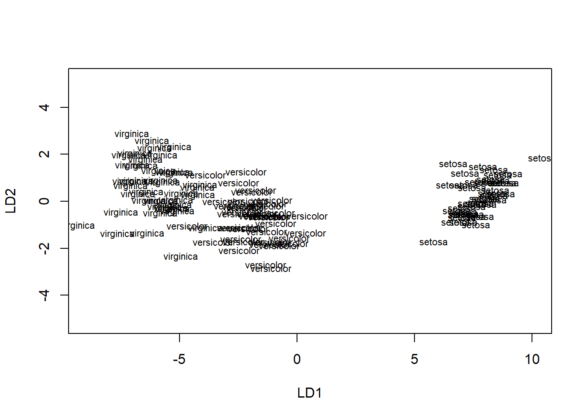
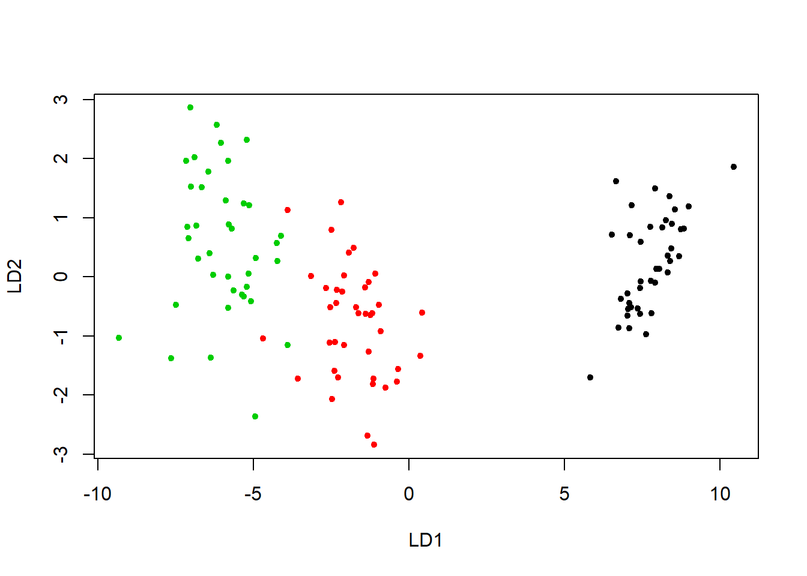
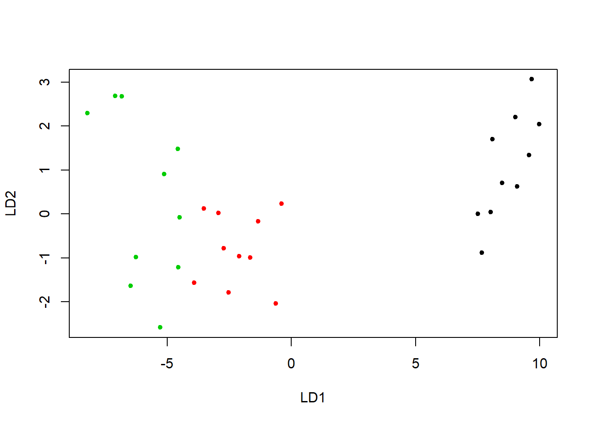

Analiza dyskryminacyjna (ang. discriminant analysis) – jej zadaniem jest rozstrzyganie, które zmienne niezależne (predyktory) w najlepszy sposób dzielą dany zbiór przypadków na występujące w naturalny sposób grupy, opisane jakościową zmienną zależną.
W metodzie tej możemy wyróżnić dwa główne etapy:
Zostanie opisany model liniowy (użyjemy liniowej kombinacji predyktorów aby przewidzieć klasę obserwacji).
Załadujmy potrzebne biblioteki:
library(tidyverse)
library(caret)Załadujmy ponownie ramkę iris i podzielmy ją na tzw. część treningową (uczącą) i testową.
data("iris")
set.seed(123)
training.samples <- createDataPartition(iris$Species,p = 0.8, list = FALSE)
train.data <- iris[training.samples, ]
test.data <- iris[-training.samples, ]Wykonajmy normalizację danych:
preproc.param <- preProcess(train.data,method = c("center", "scale"))
train.transformed <- predict(preproc.param,train.data)
head(train.transformed)## Sepal.Length Sepal.Width Petal.Length Petal.Width Species
## 1 -0.8344991 1.15462417 -1.328132 -1.311924 setosa
## 2 -1.0673826 -0.07152539 -1.328132 -1.311924 setosa
## 3 -1.3002661 0.41893443 -1.384789 -1.311924 setosa
## 4 -1.4167078 0.17370452 -1.271475 -1.311924 setosa
## 7 -1.4167078 0.90939426 -1.328132 -1.180732 setosa
## 8 -0.9509409 0.90939426 -1.271475 -1.311924 setosatest.transformed <- predict(preproc.param,test.data)
head(test.transformed)## Sepal.Length Sepal.Width Petal.Length Petal.Width Species
## 5 -0.9509409 1.3998541 -1.328132 -1.311924 setosa
## 6 -0.4851739 2.1355438 -1.158162 -1.049539 setosa
## 10 -1.0673826 0.1737045 -1.271475 -1.443117 setosa
## 12 -1.1838243 0.9093943 -1.214819 -1.311924 setosa
## 16 -0.1358487 3.3616934 -1.271475 -1.049539 setosa
## 17 -0.4851739 2.1355438 -1.384789 -1.049539 setosaAlgorytm liniowy na starcie szuka kierunków, które “maksymalizują” oddzielenie klas/grup. Następnie kierunki są zastosowane na danych testowych. Kierunki (zwane liniowymi dyskryminatorami) są liniową kombinacją predyktorów.
library(MASS)model <- lda(Species~., data = train.transformed)
predictions <- predict(model,test.transformed)
mean(predictions$class==test.transformed$Species)## [1] 1model## Call:
## lda(Species ~ ., data = train.transformed)
##
## Prior probabilities of groups:
## setosa versicolor virginica
## 0.3333333 0.3333333 0.3333333
##
## Group means:
## Sepal.Length Sepal.Width Petal.Length Petal.Width
## setosa -1.0120728 0.7867793 -1.2927218 -1.2496079
## versicolor 0.1174121 -0.6478157 0.2724253 0.1541511
## virginica 0.8946607 -0.1389636 1.0202965 1.0954568
##
## Coefficients of linear discriminants:
## LD1 LD2
## Sepal.Length 0.9108023 0.03183011
## Sepal.Width 0.6477657 0.89852536
## Petal.Length -4.0816032 -2.22724052
## Petal.Width -2.3128276 2.65441936
##
## Proportion of trace:
## LD1 LD2
## 0.9905 0.0095plot(model)
predictions <- predict(model,test.transformed)
names(predictions)## [1] "class" "posterior" "x"head(predictions$class, 6)## [1] setosa setosa setosa setosa setosa setosa
## Levels: setosa versicolor virginicahead(predictions$posterior, 6) ## setosa versicolor virginica
## 5 1 5.718110e-24 5.016023e-46
## 6 1 9.459855e-23 1.638348e-43
## 10 1 7.615603e-20 2.693591e-41
## 12 1 1.495465e-19 3.345580e-40
## 16 1 7.132457e-30 1.009441e-52
## 17 1 8.379340e-27 5.833391e-49head(predictions$x, 3) ## LD1 LD2
## 5 8.495822 0.7032086
## 6 8.095995 1.6969837
## 10 7.667684 -0.8766525lda.data <- cbind(train.transformed, predict(model)$x)
plot(predict(model)$x, pch=20, col=train.transformed$Species)
plot(predictions$x, pch=20, col=predictions$class)